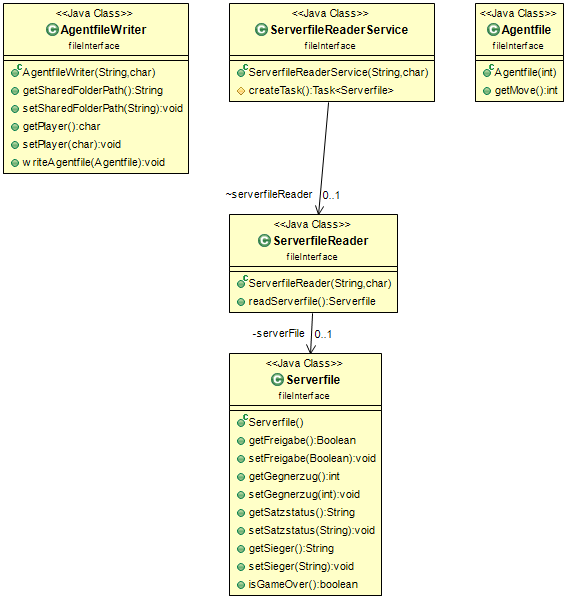

Dieses Paket beinhaltet die Klassen für die dateienbasierte Kommunikation mit dem Server.
Die dateienbasierte Kommunikation erfolgt mittels Input/Output Streams.
Textdateien, die der XML-Syntax entsprechen, werden auf einem zentralen Austauschverzeichnis abgelegt.

Klassenstruktur des Paketes